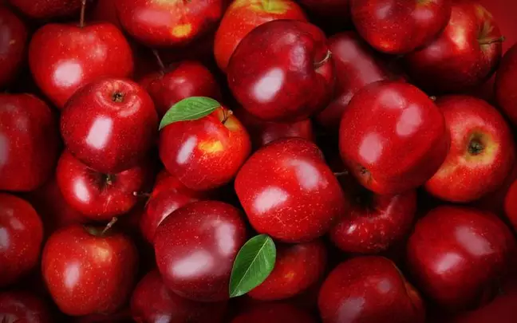

|

|
maçã por dia mantém você longe do médico. Esse provérbio inglês resume bem o que o alimento proporciona para o organismo.
maçã é uma fruta de origem asiática e há mais de sete mil espécies diferentes, cada uma com características específicas, mas com propriedades nutricionais semelhantes.
Saborosa e prática de carregar, ela possui nutrientes importantes que estimulam o corpo a prevenir doenças.
|